Robotic Arm training Project
Objective:
I want to be able to build and train a robot that has the capabilities to help families around the world have affordable solutions to do mundane tasks (ex. folding clothes, watering plants, etc) that cannot be automated with traditional systems. Specifically, this arm should be able to sort through and fold clothes of any order and in any environment.
While my intent is to fold clothes some other use cases of this robot can be:
- Wiping surfaces: Cleaning down kitchen counters, stovetops, and dining tables after meals.
- Managing dishes: Loading and unloading the dishwasher or hand-washing pots and pans.
- Fridge upkeep: Purging expired food, wiping down sticky shelves, and taking inventory before grocery shopping.
- Appliance care: Descaling the coffee maker, cleaning the microwave interior, and clearing the toaster crumb tray.
- Vacuuming: Cleaning carpets, rugs, and upholstery to remove dust, pet hair, and debris.
- Sweeping & mopping: Clearing hard floors in high-traffic areas like entryways, kitchens, and bathrooms.
- Dusting: Wiping down baseboards, blinds, ceiling fans, light fixtures, and electronic screens.
- Sorting & washing: Separating whites from colors and running loads of clothing, towels, and sheets.
- Drying & folding: Transferring wet clothes to the dryer or hanging them to air-dry, followed by folding and putting them away.
- Bed making: Straightening sheets daily and changing out linens once a week.Bathroom Sanitation
- Scrubbing fixtures: Cleaning the toilet bowl, disinfecting the sink, and scrubbing shower walls or bathtubs to prevent soap scum.
- Mirror polishing: Wiping away water spots and toothpaste splatters from glass surfaces.
- Emptying bins: Collecting trash, compost, and recycling from various rooms and taking them to outdoor bins.
- Sanitizing cans: Rinsing out and disinfecting trash cans to eliminate odors.
- Yard work: Mowing the lawn, raking dead leaves, pulling weeds from garden beds, or shoveling snow.
- Vehicle care: Washing the car exterior and vacuuming the seats and floor mats.
- Pet duties: Scooping the litter box, cleaning up the yard after a dog, or washing pet food bowls.
How do we plan on achieving this?
I plan on building a Humanoidal robot (a robot consisting of an arm) and training it using AI to take care of [chore name]. To do this I will start by building a Follower and leader arm using an open source arm design (the main point of this project is for it to be affordable for families around the world meaning that open source arms can help reduce design costs).
Open Sourced Arms
There are many open-sourced arms on their internet, each with their own pros and cons. Through extensive research, I determined that the design best suiting my intent is the SO101 Arm.
| ARM | PROS | CONS |
|---|---|---|
|
Open Arm 2.0 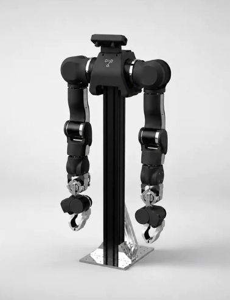 |
|
|
|
SO101 Arm 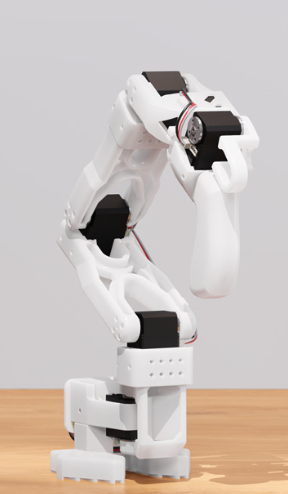 |
|
|
|
ReBot Arm 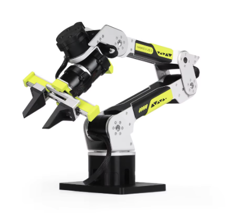 |
|
|
How does so101 fit my purpose best?
The SO101 Arm is the best fit for my project because it most closely aligns with the objectives of my project. One of the main goals for this project is for it to be an affordable solution to mundane daily tasks. Because the SO101 is designed to be entirely 3d printed it is much more financially viable. In addition, the ease of fabricating makes it easier for me and for other families to easily replicate the arm. Moreover, So101 can be trained intuitively, speeding up the initial training stages and making it easier for others to contribute to training the arm. Some of the main cons for this arm is that it is less durable than the other arms; however, because the arm is being trained to fold clothes (a more delicate task) this does not pose an issue.
So101 Build Process
Gauge
To create the SO101 arm I need to start by fabricating 3d printed parts. Because this requires printing a large amount of objects, it is a very time consuming process (15+ per arm). This means that if there is a slight issue with tolerancing that creates grooves that are too large or too small it will require almost a full day of reprinting. In order to prevent this issue I first began by printing a gauge to test my printer's accuracy.
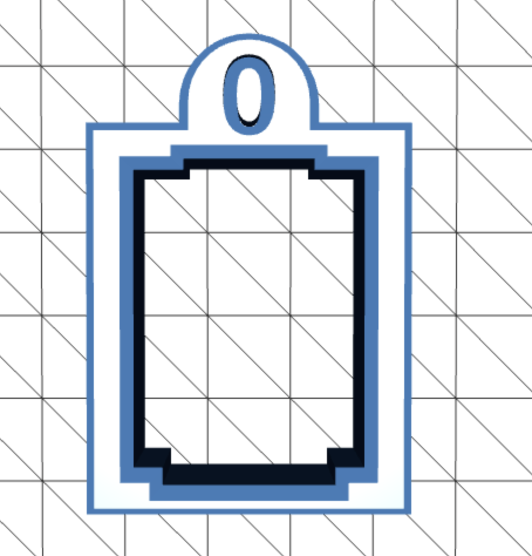
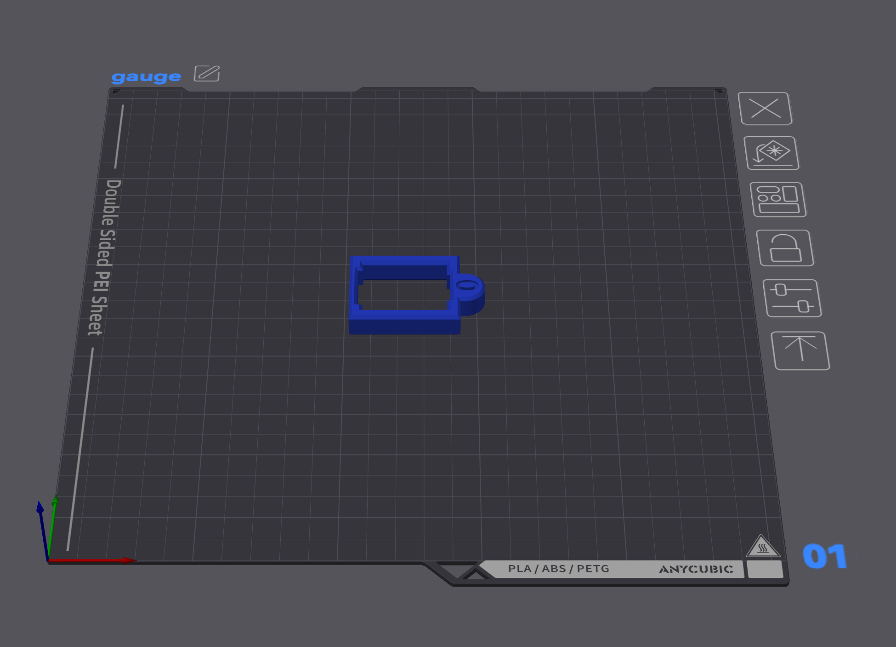
Figure 1A (left) shows the CAD of the STS3215 gauge and Figure 1b (right) shows the model on the AnyCubic Slicer (used to compile GCode to 3d print part)
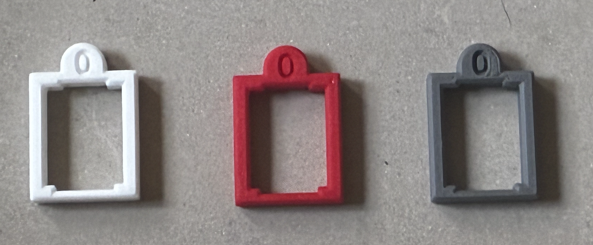
After the first print (Figure 2A), I compared the gauge to my STS3215 servo and found that the motor was barely able to fit into the gauge and couldn't be fully pushed through. To fix this I needed to increase the tolerance of the gauge, which I did by reducing the xy contour compensation from 0 to -0.12 mm (adjusts the perimeter size without changing other dimensions allowing the motor to slide more freely through the gauge). I decided to increase the XY contour compensation gradually (in steps) because if the gauge becomes too loose it may cause the motor to slip out of the arm in the final print. After printing this (Figure 2b) I found that, although this was much better than the previous gauge, it was still too tight for the motor to slide through without excessive force. Once again I fixed this by changing the xy contour compensation, reducing it from -0.12 mm to -0.15mm. This version (Figure 2C) ended up being the perfect tolerance for the gauge so I decided to keep this for the actual print.
Printing the Follower and Leader Arms
To print the follower arm I started by prepping the Gcode in the anycubic slicer. The settings I used to print the follower arm are:
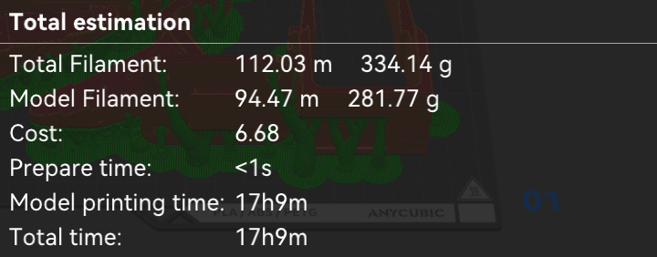
I left the print overnight and the next day I received the following result.
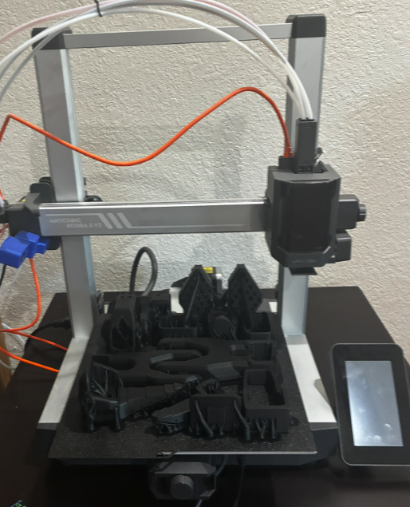
Although the print was completed successfully, I noticed some issues. The printer created an extremely large amount of supports. And under further inspection I noticed that a large portion of the supports were, in fact, not helping with the printing of the structure. This was not only a waste of material, but also a waste of time taken to print the parts.
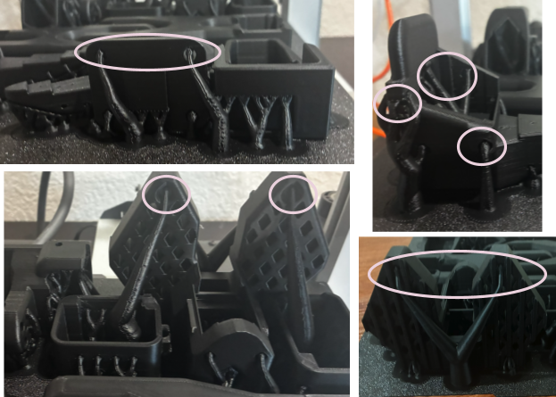
To fix this issue, I decided to go back and look at the settings in the anycubic slicer. Before the first print I had made sure to remove small overhangs (making it so that supports weren't created for any small overhangs that didn't require support), so I hadn't expected the unnecessary support. This time when I went back to the settings I found another option to support only critical regions. After enabling this setting the time and material required for the print reduced drastically.
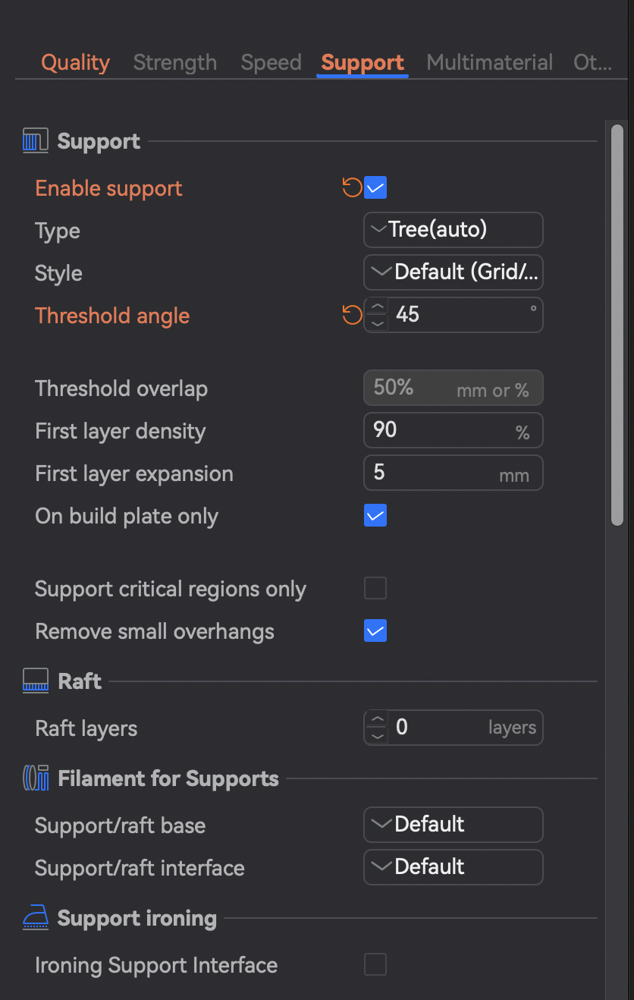
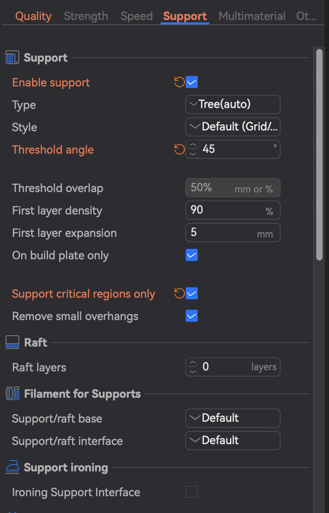
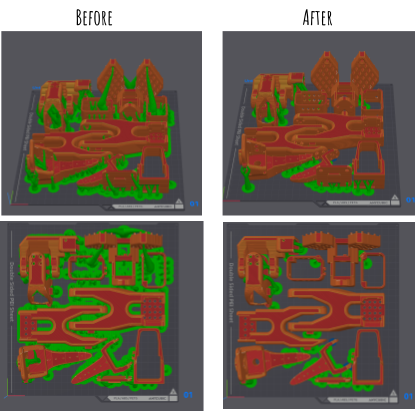
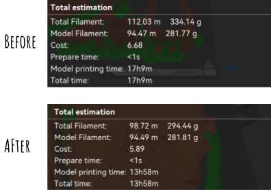
This shows the settings for supports that I used before (6A) and after (6b) the first print. The difference in supports generated can be seen in 6c. In the before section almost the entire surface surrounding the parts was covered in supports while afterwards less than a quarter of the previous supports remained. This removal of supports shows how the first print created more than 3 hours of additional printing and nearly 40 extra grams of filament.
Savings:
| With extra support | Without extra support | % improvement | |
|---|---|---|---|
| Weight | 334.14 g | 294.44 g | 12% |
| Time | 1029 min | 838 min | 19% |
After adjusting the settings, I started the second print for the leader arm. Although this print went pretty smoothly, because one of the parts' first layers slipped in the middle of the print (likely due to oil/grease on the print bed) and was not caught in time one of the parts completely messed up and I reprinted it later on.
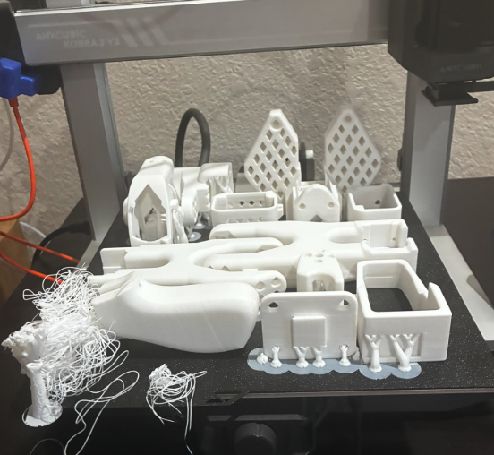
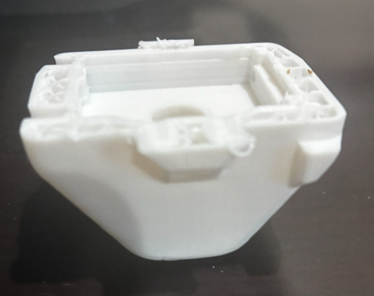
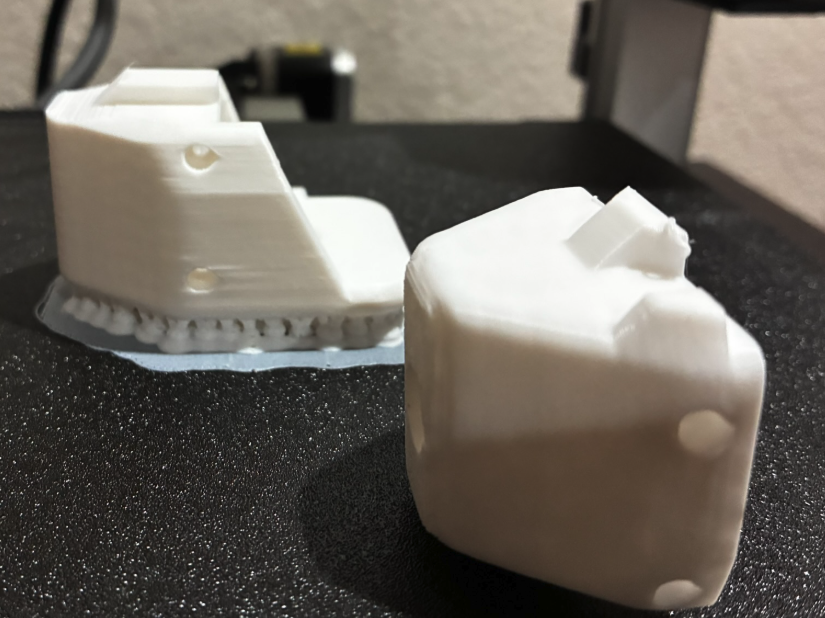
In 7A, you can see the finished results of the second print. On the left, front side of the image there is a mess of filament that came from the printer attempting to add a layer to a part that fell off the plate. In 7b you can see the part that fell. On the top of the part, you can see that it is incomplete as you can see the part's infill. You can see a comparison of the incomplete part with the reprint in 7C.. For the reprint I reoriented the part so that it was more sturdy.
After finishing the print of the parts for both the follower and leader arm, I removed all the external supports so that it was ready to be put together.
Building the Follower and Leader Arms
After finishing the print of all the parts, I began assembling the arm. To do this, I followed the instructions on the Hugging Face documentation. I began by building the follower arm. Prepping for this arm was simple because all of the joints required the same amount of torque (30 kg/cm). On the other hand, when building the leader arm I had to label different motors according to their joints. The purpose of this difference is to make it easier to move the leader arm, while the follower arm still had the torque required for more complex tasks. Overall, the build for the two arms was very similar (with an exception of the claw for the follower arm and the trigger for the leader arm), making the process for building the second (Leader) arm a simpler process (as I have already figured out small details from building the follower arm).
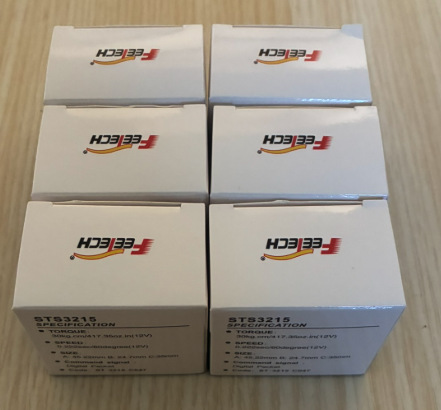
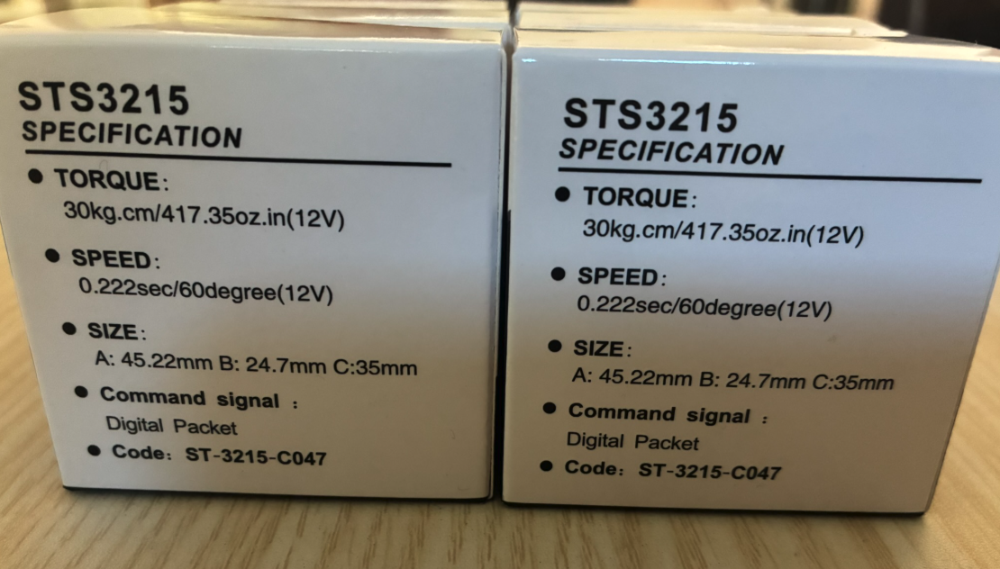
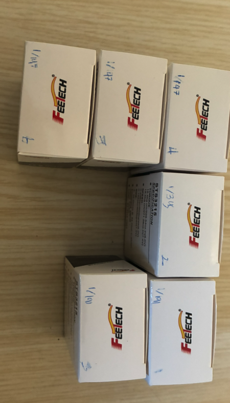
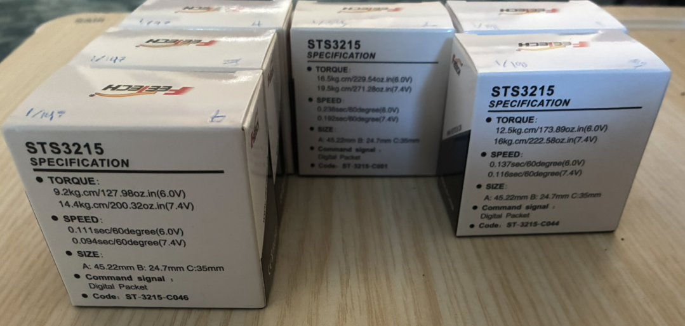
This is the motor prep for the follower (8A and 8B) arm and the leader (9A and 9B) arm.
Issues I faced along the way:
Along the way I faced many issues regarding the build of the arms. I have never really built a robot similar to this before: previously it has always been a standard set of pieces (which I am pretty familiar with). Because of this, it required extensive research to figure out the orientation of motors, which sides required screws and so on. However, after figuring this out the process became a lot easier. In addition, when removing the supports occasionally a thin layer of the supports sticks to the bottom/inside of the parts. This made it so that some parts weren't able to fit in its location because the layer surpassed the tolerancing. To fix this issue, I had to file many of the parts to remove this extra layer. Finally, some of the parts had supports within the holes of the part. This was extremely difficult to remove (often required redrilling the parts) and made it so that occasionally the screw was unable to fit in the hole.
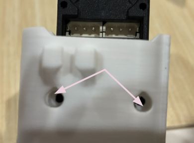
The arrows in image 10A show the extra filament that covered some of the holes, making it difficult to properly tighten the screws into the motor.
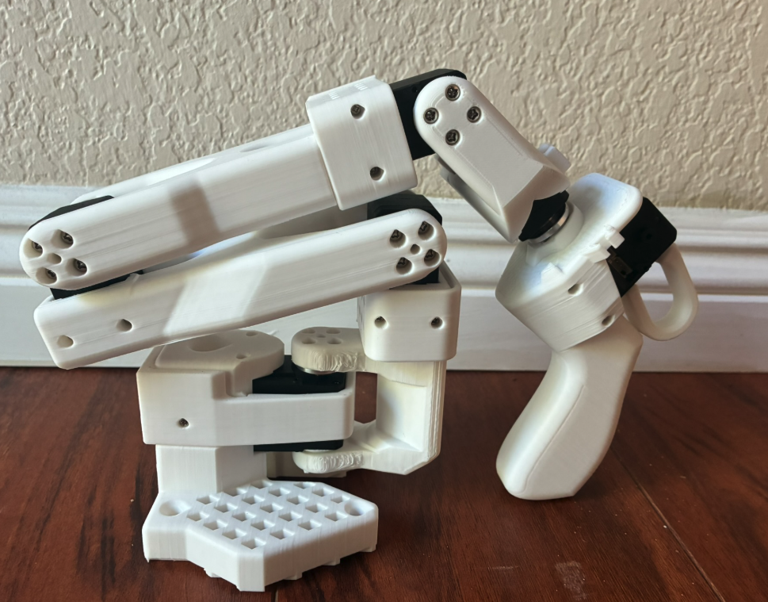
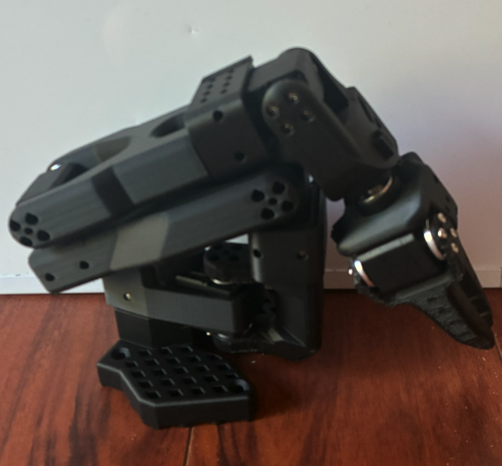
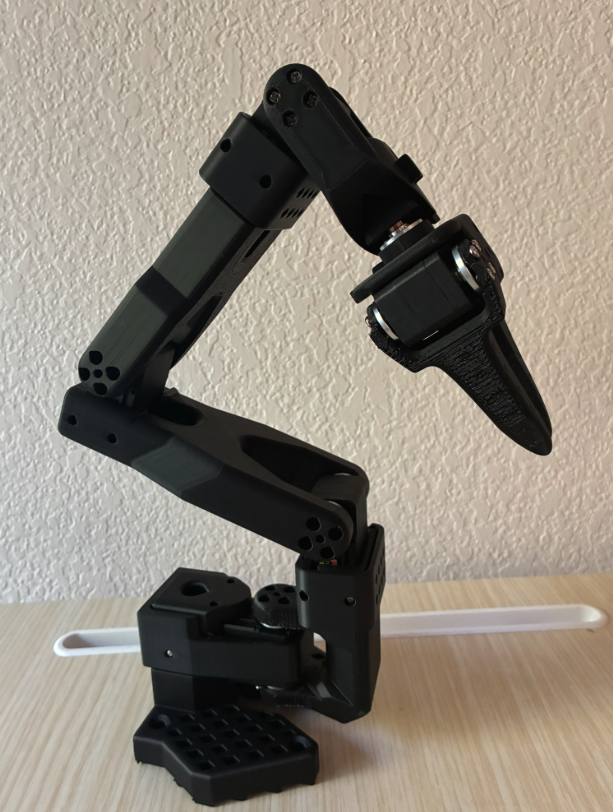
These are the final build (not including wiring) for the Leader (11A) and the follower (11B and 11C) arms.
Wiring and Configuring the SO101 Arms
First, I learned about the difference between wiring in VEX robots, which I have worked on in the past (direct connections between the brain and the motors), and the wiring in the arms (I2C).
I2C is a two-wire serial communication system, or in other words, a system where, in this case, the motors are connected to the brain.
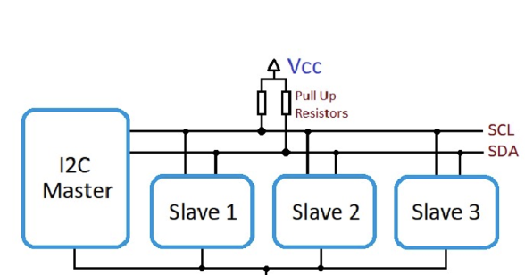
In this case the I2C Master represents the “Brain” (Motor control board) while the 6 motors for each arm act as the slaves.
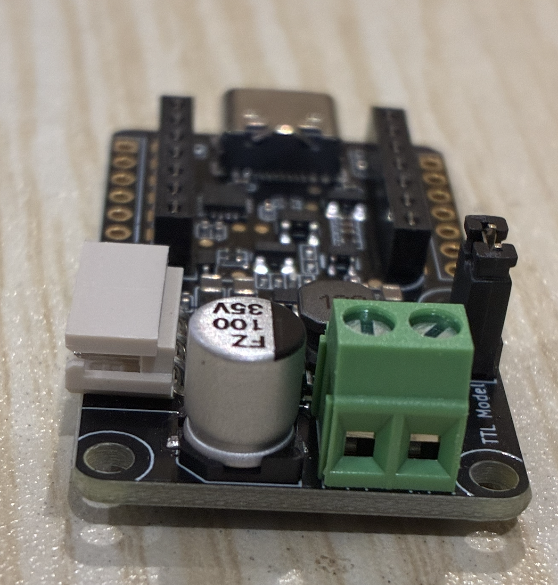
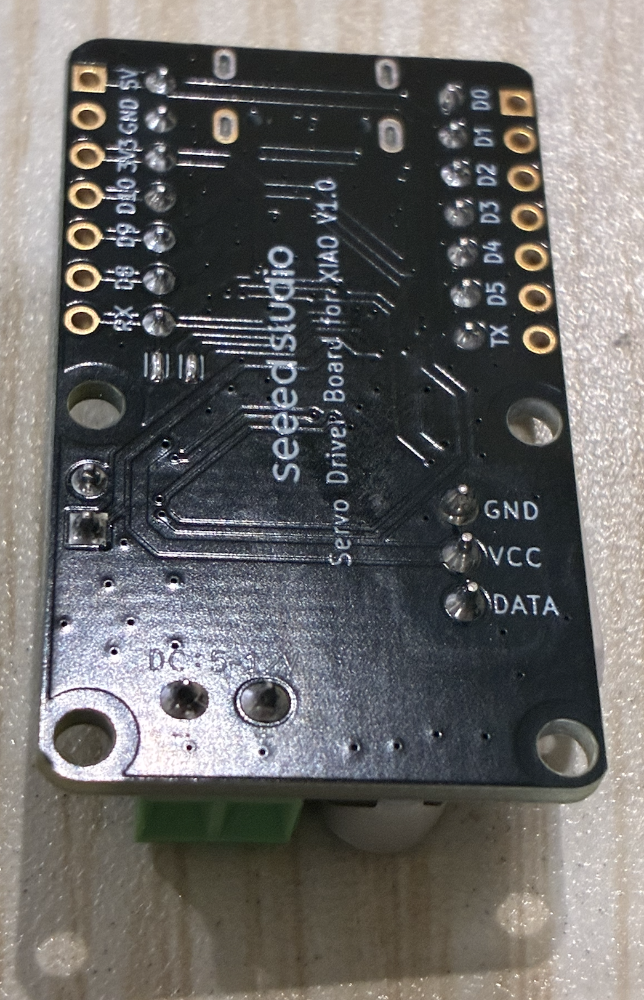
In the motor control board the green port is for power, the beige for the serial wires, and the metallic for the computer wire. On the power terminal (green power), there was no place to connect the power source wire. Instead, I had to use a power source adapter, and using the bottom of the board to identify the positive and negative sides, I was able to connect the red wire to positive and the black wire to negative (universal DC wiring).
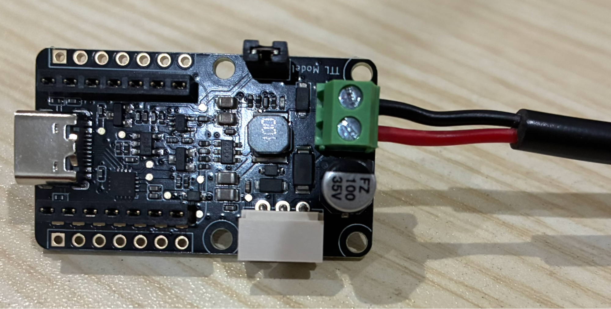
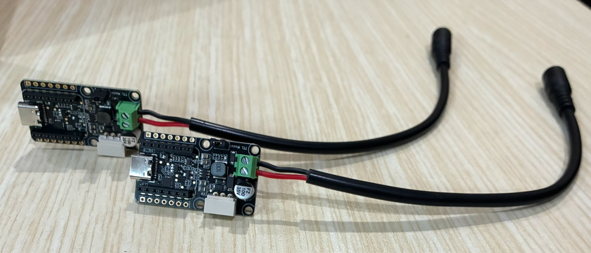
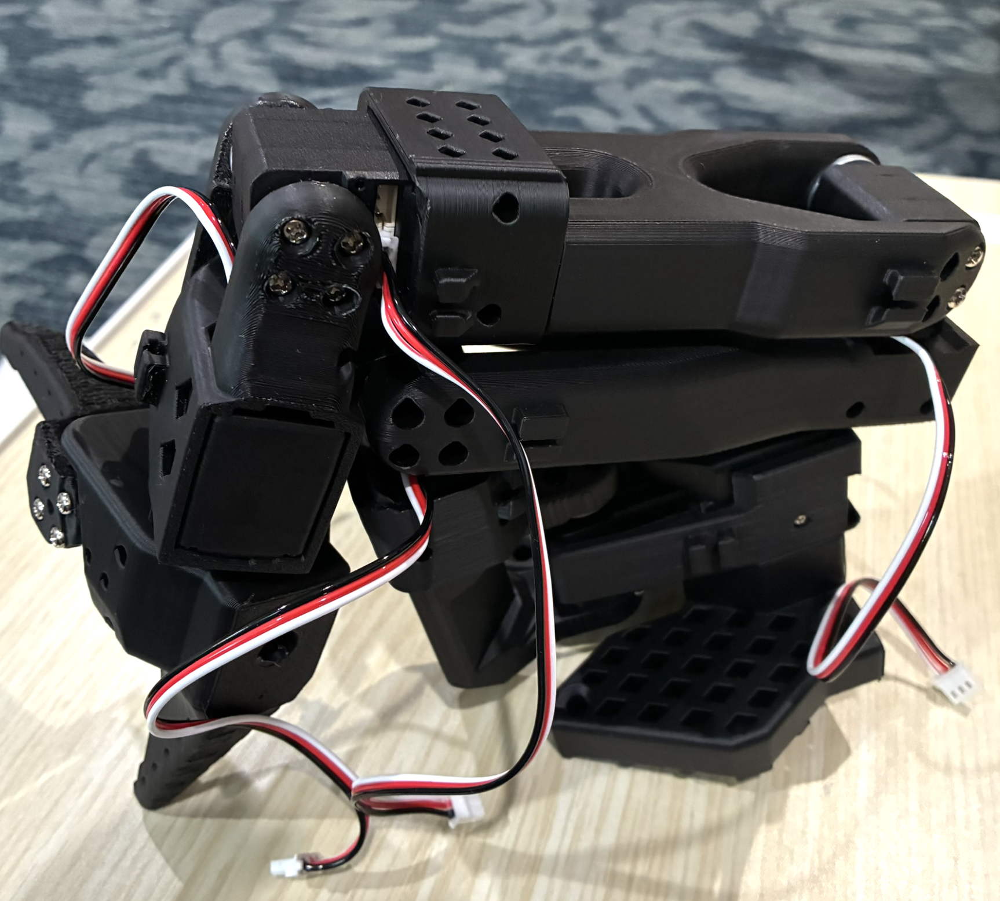
I connected the wires to each of the servos to prepare it for programming (15A).
Configuring the Motors
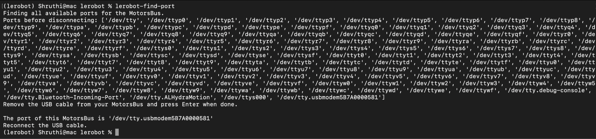
I connected my motor controller terminal to my computer and a power source and initialized it with the command lerobot-find-port. The port of this MotorsBus is /dev/tty.usbmodem5B7A0000581 (16A).
I used the following command to set up the motor ids. I used the port from the previous step for the following command:
lerobot-setup-motors \
--robot.type=so101_follower \
--robot.port=/dev/tty.usbmodem5B7A0000581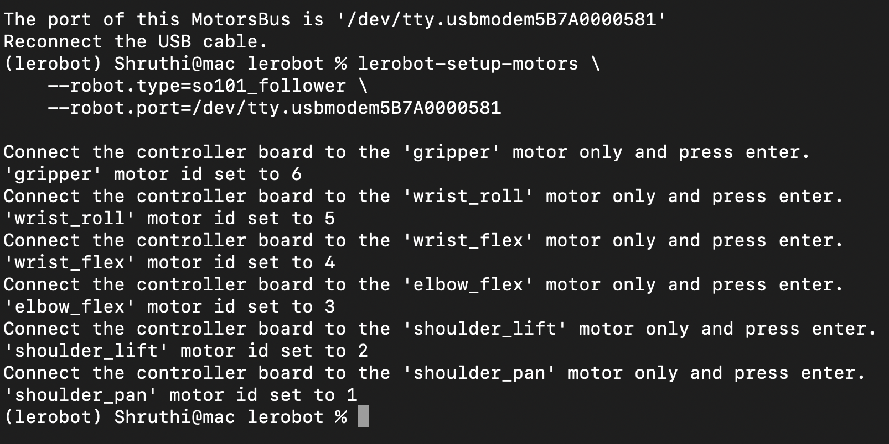
As an outcome of the previous command, the motor id of 1-6 was assigned to various motors (17A) as shown below.
| Motor | ID # |
|---|---|
| Base / Shoulder Pan | 1 |
| Shoulder Lift | 2 |
| Elbow Flex | 3 |
| Wrist Flex | 4 |
| Wrist Roll | 5 |
| Gripper | 6 |
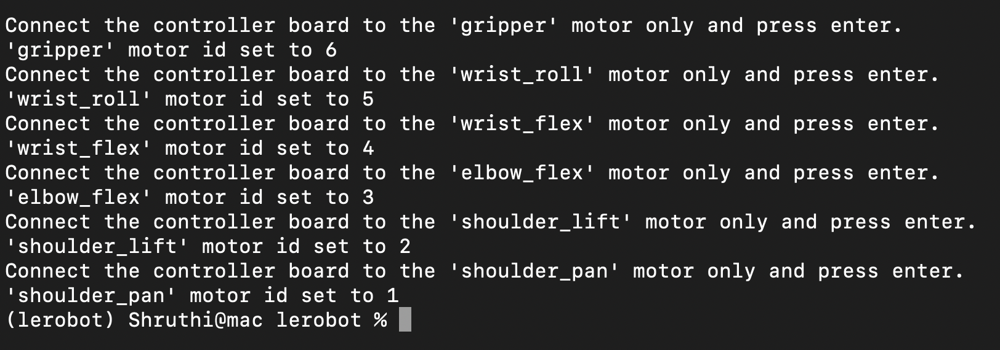
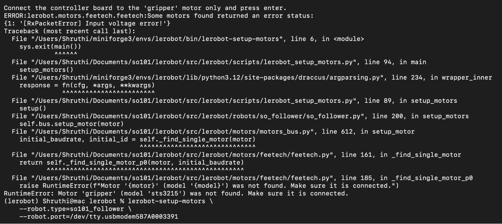
I followed the same steps to assign IDs to the motors in the leader arm. The port for the motor controller board for the leader arm is /dev/tty.usbmodem5B7A0003391. An issue I faced while doing this was a voltage error (18B), after experimenting I discovered that this occurred because the power source for the Follower arm has more voltage than that of the Leader arm.
Calibrating the Arms
After this, I started calibrating the follower and leader arm. This is important because it allows the computer to know and compare the range of motion for both arms, which will allow you to teleoperate the arms (control the follower arm using the leader arm).
To calibrate the follower arm (19A) I used the following command:
lerobot-calibrate \
--robot.type=so101_follower \
--robot.port=/dev/tty.usbmodem5B7A0000581 \
--robot.id=cookies_follower_arm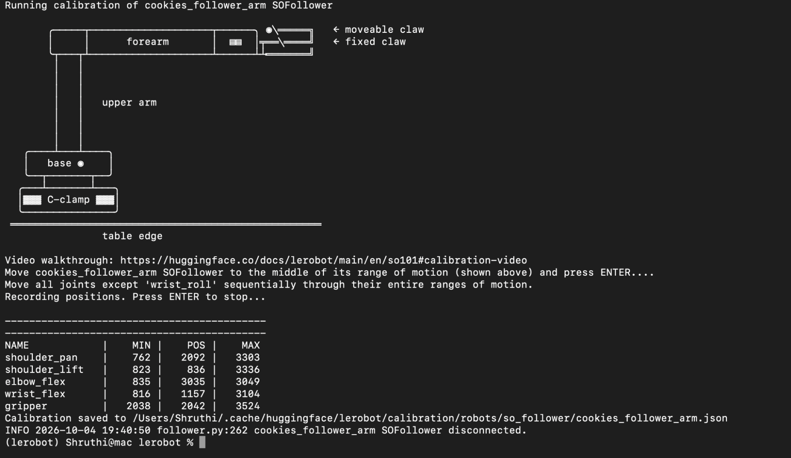
In 19A1, I’ve included a video of my calibration process for the Follower arm.
Similarly to calibrate the leader arm (19B) I used the following command:
lerobot-calibrate \
--teleop.type=so101_leader \
--teleop.port=/dev/tty.usbmodem5B7A0003391 \
--teleop.id=cookies_leader_arm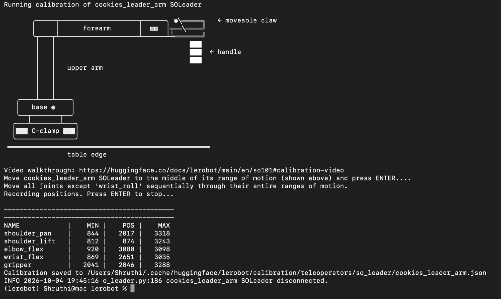
In 19B1, I’ve included a video of my calibration process for the leader arm.
Teleoperating the Arms
After calibrating the arms I set up the teleoperating system using the following:
lerobot-teleoperate \
--robot.type=so101_follower \
--robot.port=/dev/tty.usbmodem5B7A0000581 \
--robot.id=cookies_follower_arm \
--teleop.type=so101_leader \
--teleop.port=/dev/tty.usbmodem5B7A0003391 \
--teleop.id=cookies_leader_armAn issue I faced while doing this is that the terminal responded that it only recognized motor 1 and was unable to recognize the other 5 motors. This occurred because of a connection issue between motors 1 and 2, and because the motors are connected serially this made it so that the interrupted connection affected all 5 other motors. I fixed this by examining all the wiring connections and making sure everything was connected and operating as expected.
Here are some videos of me teleoperating the SO101:
In 20A, I am using the SO101 to place scattered jenga blocks into a box (teleoperating not training).
In 20B, I am attempting to teleoperate the SO101 to fold a t-shirt. This does not go as expected due to a calibration issue: the claw on the follower arm did not close completely when the gripper was closed completely on the Leader arm. I fixed this by recalibrating both arms.
In 20C, I was able to successfully teleoperate the arm to fold the cloth. Some issues that I still saw during the process was that, although the previous calibration issue (claw not closing properly) was fixed, the claw was still not able to close fully due to physical limitations (the claw itself can not close because of motor range and parts interfering with one another). In addition, the arm is unable to reach the ends of larger pieces (and many normal pieces) of clothing due to its limited range of motion.